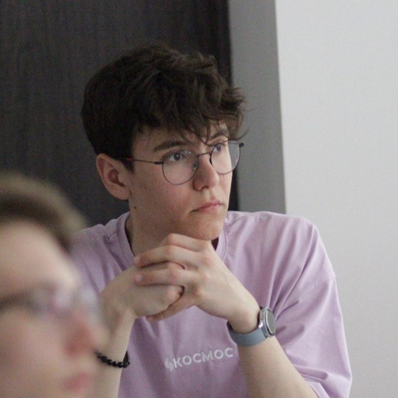

Mein Name ist Andrei, ich bin 18 Jahre alt. Ich bin in Irkutsk geboren und aufgewachsen.
Seit meiner Kindheit wollte ich Programmierer sein, weil — das glaube ich jetzt auch — nichts cooler ist, als jeden Tag in einem Bereich zu arbeiten, der die Zukunft schafft. Wie viele andere habe ich Basic studiert, dann Python unterrichtet und sogar versucht, Spiele auf der Unity-Engine zu machen.
Dann wollte ich zur Webprogrammierung gehen und schaffte es bereits Ende 2017. Jahres, meine erste Website zu erstellen. Wahrscheinlich muss niemand erklären, auf welchem Niveau er war. Aber ich habe meine Fähigkeiten weiterentwickelt. Ich habe mehrere Kurse absolviert, neue Technologien studiert und ständig geübt.
Im Sommer 2021 habe ich ein Praktikum bei der Firma Adict in Irkutsk gemacht. Innerhalb von 3 Monaten habe ich die Technologien untersucht, die derzeit in der Webentwicklung verwendet werden. Dieses Praktikum gab mir viele neue praktische Kenntnisse. Leider konnte ich aufgrund des Studiums und der Wettbewerbe nicht in der Firma als Junior Frontend Developer bleiben.
Ich versuche immer noch, mich in verschiedenen Bereichen der IT auszuprobieren. Ich habe 3D-Modellierung, Webdesign, Spiele und Android-Apps erstellt. Aber in all diesen Bereichen nimmt die Webentwicklung einen besonderen Platz ein. Ich erstelle gerne Websites, weil es am einfachsten ist, Menschen zu helfen, die 1000 Kilometer von dir entfernt sind.
Als nächstes können Sie sich mit den von mir verwendeten Technologien und meinen Arbeiten vertraut machen.